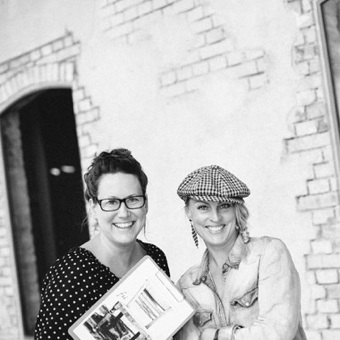

Sitt ner. Vi hjälper er att lyssna in, för att nå ut. Nu.
Vi jobbar med helhet i kommunikation. Varumärkesstrategi, grafisk profil, bildarkiv, film, sociala medier - från första visitkort och skylt till sista filmsnutt på Instagram. Vi vänder oss till företag som vill skaka av mattan, har modet att förnya och förändra, och samtidigt ha roligt under processen.
Grunden - en fotograf och en formgivare. Färg, form, text och bild möts i en skön blandning. Med en vilja och en lust att klart och tydligt förmedla. Beröra och påverka. Tillsammans med er jobbar vi envist, nyfiket och effektivt fram vad ni vill kommunicera och hur ni vill att omvärlden skall uppfatta ert varumärke.
I fjorton år har vi jobbat med kommunikation i nätverk och beroende på era behov så kan vi vara en, två eller flera.
Rebecca och Frida
